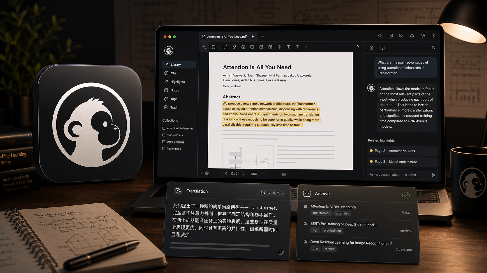

过去
复制、粘贴、再复制
答案散落在聊天记录里，和 PDF 原文逐渐失去联系。
DeepRead 把 AI 问答、翻译、高亮与批注留在论文对应位置，再把零散阅读整理成可回看的研究脉络。

我们想保留下来的，不只是答案，而是原文、疑问与理解发生连接的那个位置。
答案散落在聊天记录里，和 PDF 原文逐渐失去联系。
划选、提问、回答和后续追问始终沿着同一段上下文展开。
DeepRead 把精读、整理和回顾放在同一个本地论文库里。
从文字、图表框选或附加图片直接提问。回答保留在对应位置，支持悬浮回看和继续追问。
导入 arXiv 或本地 PDF，按主题拖拽归类，配合搜索、阅读状态与发表日期管理你的研究版图。
按 1、3、6 或 12 个月查看阅读节奏与主题分布，再让 AI 帮你梳理阶段性的研究脉络。
粘贴 arXiv 链接或拖入本地 PDF。
选择文字、框选图表，也可以附加图片。
解释、追问或整篇提问，都保留上下文。
把阅读沉淀为主题、笔记和阶段性总结。
论文、全文、高亮和问答档案默认保存在你的电脑上。DeepRead 不内置模型，而是调用你已经安装并登录的 Claude Code 或 Codex CLI。
了解数据流向与使用前提 →不自带。你需要安装并登录 Claude Code 或 Codex CLI，再在 DeepRead 设置中选择对应服务。AI 调用使用你自己的账号与额度。
PDF、全文、高亮、批注和问答档案默认保存在本机。发起 AI 问答时，相关内容会发送给你选择的 AI 服务；开启 Notion 归档后，你主动同步的内容也会发送到 Notion。
大多数带文字层的论文 PDF 都可以直接阅读和提问。纯扫描版 PDF 可能因为缺少可提取文字而无法完整使用部分功能。
兼容当前桌面壳的 Core 功能更新可以在设置页安装；涉及桌面壳能力的版本仍需要从 GitHub Releases 下载新的完整安装包。
目前正式安装包支持 macOS Apple Silicon 与 Linux x64。其他平台的进展会在 GitHub Releases 中更新。